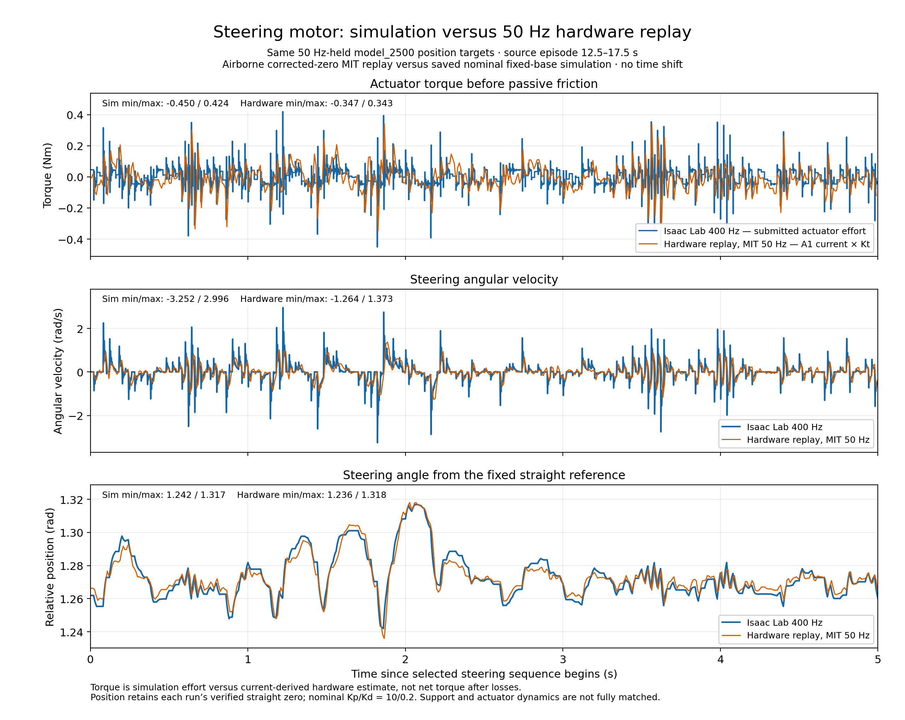
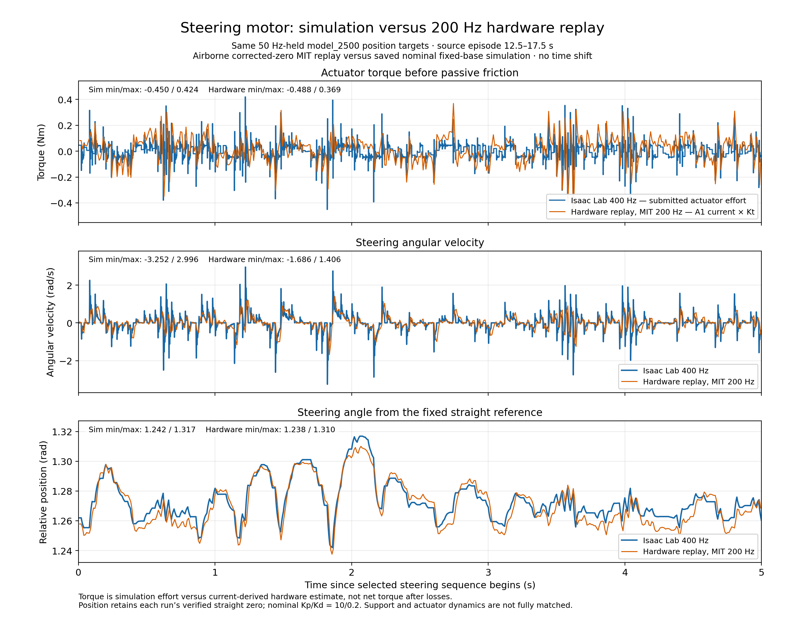

Same 50 Hz-held position targets. Three panels: actuator-level torque, steering velocity and position. Blue: saved Isaac Lab 400 Hz. Orange: airborne hardware.
Source episode 12.5–17.5 s, displayed as 0–5 s. No time shift or bias correction. Torque is actuator effort versus current × Kt; physical support/dynamics and sample rates differ.

